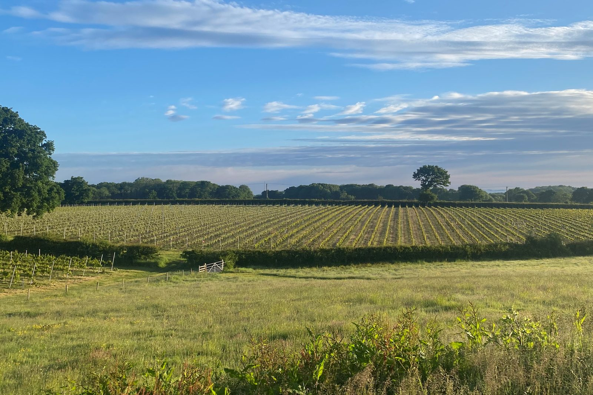

Haywards Heath & Ditchling
Court Garden Vineyard
Estate-verified · October 2026
A family-run sparkling producer on a livestock farm outside Ditchling, with guided tours from April to October, a winter winery experience, and Saturday picnic lunches in summer.

The visit
Court Garden keeps going well past the summer: guided tours run from April to October, and a winter winery experience carries on to the end of March.
Two guided tours, April to October
The Vineyard and Sparkling Wine Tour and the Wines & Cheese Vineyard Tour both run from April to October, in morning or afternoon slots.
The Autumn & Winter Winery Experience
The Autumn & Winter Winery Experience, with a vermouth spritz, is available now through to the end of March.
Saturday picnic lunches in summer
Homemade picnic lunches are served on Saturdays between 1 and 2pm, from May to the end of September.
Dogs on a lead, please
Court Garden is a livestock farm, so dogs must stay on a lead for the whole visit. The self-guided tour suits dogs on leads and children best.
Events in the Sussex Barn
The estate hopes to host more evenings like the Baroque Collective Singers in the Sussex Barn, but nothing is planned yet.
Nearest station: Hassocks. Sussex vineyards sit down winding lanes, so check parking and access with the estate if you’re not driving.
Common questions
When do Court Garden’s vineyard tours run?
From April to October, with morning or afternoon slots for both the Vineyard and Sparkling Wine Tour and the Wines & Cheese Vineyard Tour.
Can you visit Court Garden in winter?
Yes. The Autumn & Winter Winery Experience runs through to the end of March.
Is there food at Court Garden?
Homemade picnic lunches are served on Saturdays from 1 to 2pm, May to the end of September.
Are dogs welcome at Court Garden?
Yes, on a lead, as it’s a livestock farm. The self-guided tour suits dogs and children best.
What’s the nearest station to Court Garden Vineyard?
Hassocks. It’s not a walk, so allow for a taxi from the platform.
At a glance
- Where
- Ditchling, East Sussex
- Tours & tastings
- Guided tours Apr–Oct; winter winery experience to end of March
- Food on site
- Picnic lunches, Saturdays 1–2pm, May–Sep
- Stay on site
- Checking with the estate
- Dogs
- On a lead (livestock farm)
- Children
- Self-guided tour suits them best
- Nearest station
- Hassocks
Also on the Haywards Heath & Ditchling
- Ridgeview Wine Estate Ditchling / Hassocks
- Artelium Wine Estate Streat / Hassocks
- Highweald Wine Estate Haywards Heath
- Everflyht Ditchling
Also from Hassocks
- Albourne Estate Hassocks (10 min)